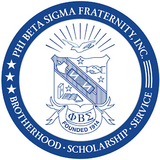
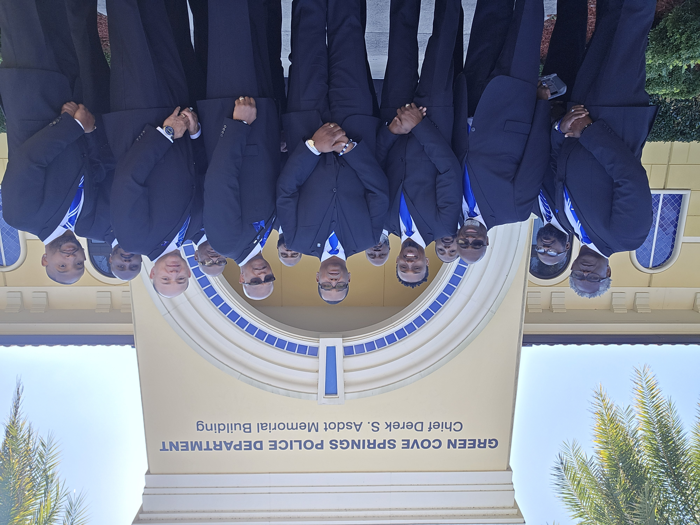

MAY 29, 2023
The VisionThree Sigma brothers discuss establishing a stronger presence in Clay County.

ΦΒΣ | ΤΥΣBrotherhood • Scholarship • Service
Serving the geographical area of Clay County, Florida and surrounding areas since 2023
Phi Beta Sigma Fraternity, Inc., through the Tau Upsilon Sigma Chapter, serves the geographical area of Clay County, Florida and surrounding areas. Established in 2023, Tau Upsilon Sigma is an alumni chapter of Phi Beta Sigma committed to advancing the Fraternity's principles of Brotherhood, Scholarship, and Service through meaningful local action.
Through community service, educational initiatives, social action, mentorship, and fellowship, the chapter works to advance Phi Beta Sigma's mission and proud legacy while addressing the needs of the communities we serve. We believe brotherhood is strengthened through service and that our collective efforts can create lasting positive change.
Tau Upsilon Sigma Chapter began with a shared vision to strengthen Phi Beta Sigma Fraternity, Inc.'s presence and service in the geographical area of Clay County, Florida and surrounding areas.
On May 29, 2023, Dr. Cornelius Jones, Tim Crutchfield, and Dr. Randy Woods met in brotherly fellowship and discussed the need for Sigma Men living in Clay County to more directly serve the community they called home. With more than 230,000 residents in the county, they saw an opportunity to expand Phi Beta Sigma's local presence and make a meaningful impact.
Dr. Cornelius Jones and Tim Crutchfield moved that vision forward, rallying support from fellow brothers and community leaders and developing a strategic plan for a new chapter. On August 1, 2023, a formal request supported by six brothers was submitted to the Florida State Director.
Just over two months later, on October 14, 2023, Tau Upsilon Sigma Chapter was officially established in Clay County, Florida.
Tim Crutchfield • Gerald Garvey • Scotty Jones • Maurice Scarboro • Ansil Lewis • Dr. Cornelius Jones
Brotherhood. Scholarship. Service.
As a chapter of Phi Beta Sigma Fraternity, Inc., Tau Upsilon Sigma advances the Fraternity's principles of Brotherhood, Scholarship, and Service throughout Clay County and surrounding communities. We strive to foster a strong and inclusive brotherhood, promote academic excellence, encourage community involvement, and positively impact the lives of those we serve.
Three Sigma brothers discuss establishing a stronger presence in Clay County.
Six brothers formally submit the request to establish a chapter.
The chapter is officially established in Clay County.
We cultivate bonds of fellowship, mutual support, and accountability among Sigma men while strengthening the communities we serve.
We promote education, achievement, mentorship, and opportunities that empower individuals and strengthen future generations.
We put our principles into action through meaningful service, social action, and community engagement throughout Clay County and surrounding communities.